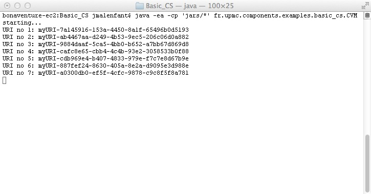
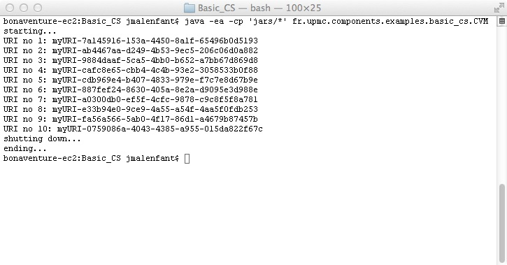
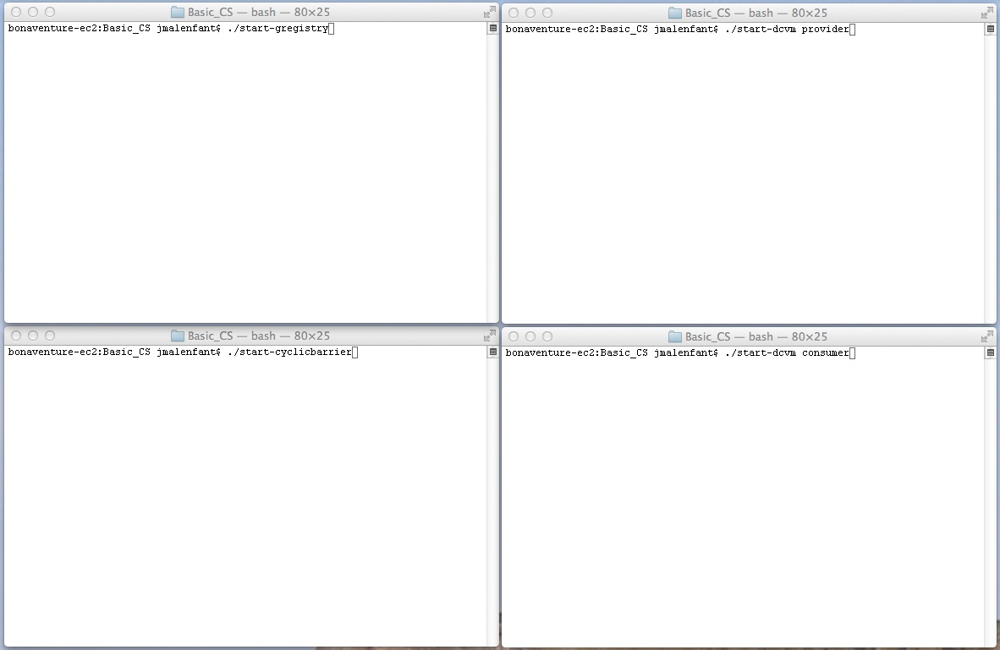
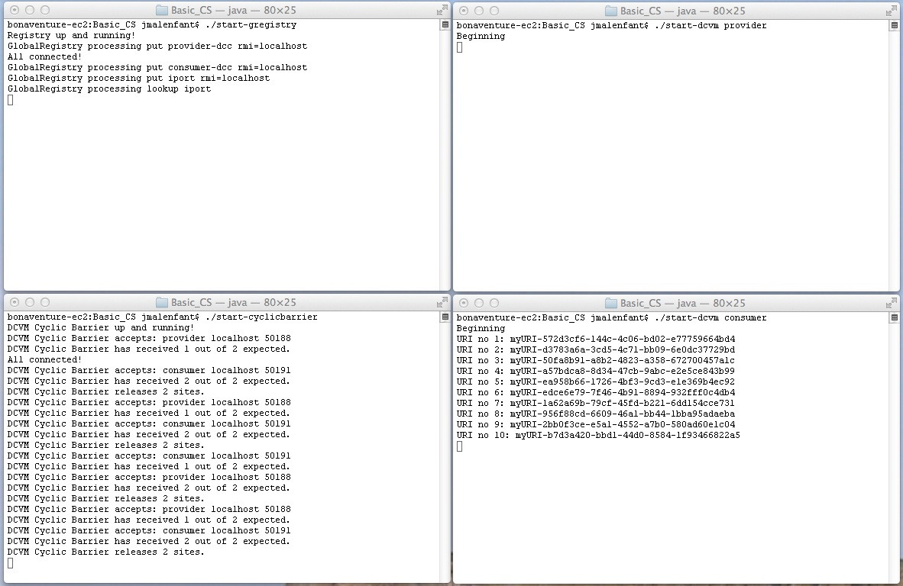
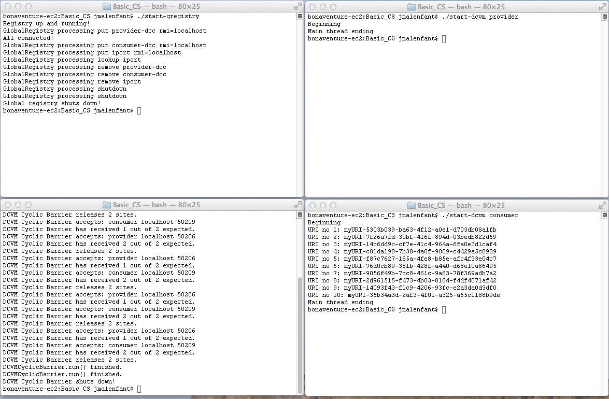

Basic client/server example.
| Licence |
|---|
|
Copyright Jacques Malenfant, Sorbonne Universite. Jacques.Malenfant@lip6.fr This software is a computer program whose purpose is to provide a basic component programming model to program with components distributed applications in the Java programming language. This software is governed by the CeCILL-C license under French law and abiding by the rules of distribution of free software. You can use, modify and/ or redistribute the software under the terms of the CeCILL-C license as circulated by CEA, CNRS and INRIA at the following URL http://www.cecill.info. As a counterpart to the access to the source code and rights to copy, modify and redistribute granted by the license, users are provided only with a limited warranty and the software's author, the holder of the economic rights, and the successive licensors have only limited liability. In this respect, the user's attention is drawn to the risks associated with loading, using, modifying and/or developing or reproducing the software by the user in light of its specific status of free software, that may mean that it is complicated to manipulate, and that also therefore means that it is reserved for developers and experienced professionals having in-depth computer knowledge. Users are therefore encouraged to load and test the software's suitability as regards their requirements in conditions enabling the security of their systems and/or data to be ensured and, more generally, to use and operate it in the same conditions as regards security. The fact that you are presently reading this means that you have had knowledge of the CeCILL-C license and that you accept its terms. |
In this example, a basic client/server is constructed. Upon a call, the server will provide a string that is an URI.
Here are the steps from the design to execution:
URIProviderI, which
defines a method proideURI. Notice that this method throws an
exception, as it is required from the RMI protocol that all methods
that can be called through RMI throws at least the
java.rmi.RemoteException. The required interface is
URIConsumerI. As in component-based programming, client and
server components need not be designed by the same persons, and may be
connected after their design and implementation, the required interface does
not necessarily use the same signatures for the service. A method in a
required interface does not have to throw an exception, but here as the
service method does, we add the exception throwing declaration to be able
to propagate the exception if necessary.
AbstractComponent called
URIProvider, to which we add a method
provideURIService.
AbstractInboundPort named URIProviderInboundPort.
See the documentation of this class for details about the port design and
implementation.
AbstractComponent. Here, we want
an active component with one thread, so we use the constructor
AbstractComponent(boolean) as a basis. Beware that component
interfaces must be added to the appropriate sets, ports must be put into
the set of ports of the component and published appropriately when needed.
AbstractOutboundPort
called URIGetterOutboundPort. As other outbound port, it
implements the required interface to make it possible for the owner component
to call it, and upon such a call, it transfers it to the connector, that will
itself call the inbound port of the server component.
ComponentTask defined in the
interface ComponentI. It only requires to define a run method,
which in this case calls an internal method getURIandPrint
that implements the component's behaviour.
AbstractConnector called
URIServiceConnector. This connector implements the required
interface by simply calling the inbound port with the corresponding offered
method.
The single JVM case
In the single JVM case, an assembly is created by a component virtual machine
itself as a subclass of AbstractCVM, called CVM.
This CVM deploys two components: a provider and a consumer. The two are
connected by their inbound and outbound ports respectively, through the connector.
To connect two ports, it is necessary that to know the URI of the two ports
to be connected. For simplicity, CVM defines them as static
constants.
Next, the method deploy must be implemented to create the
components, publish their ports and connect them. Notice here that the
provider component is created by passing the constant false to the constructor
of URIProvider, hence its inbound port will be published only
locally, as single JVM deployment do not use a global and RMI registry.
A connector is instantiated from URIServiceConnector and used
to connect the two components by calling the method connectWith on
ConnectionBuilder.SINGLETON.
The main method of the CVM creates an instance of CVM, calls its
method startStandardLifeCycle, waits until the program has finished,
and then exits with System.exit(0). The class CVM can
the be run as any Java application, as it appears in this first screen shot before
starting the execution where the source are placed in the subdirectory
jars:
During the execution, the consumer prints a new URI each 2 seconds:
At the end of the execution, the ten URI have been printed and the control returns to the shell.
The multiple JVM case
In the multiple JVM case, a distributed assembly is created by a distributed
CVM itself defined as a subclass of AbstractDistributedCVM, called
DistributedCVM. But before going into the code of this class, the
programmer must decide a deployment and its configuration. A distributed CVM
will be run on several JVM, and eventually on several hosts. Connecting
components running on different JVM uses RMI, which requires the publication of
remote objects (here component ports) on a RMI registry, and in the openly
available implementations of Java, a RMI registry cannot be changed by code
running on a different host, so one need to have one RMI registry running per
host. All of these requirements force every part of the distributed CVM to have
informations about the registry and the registry needs to know about the number
of JVM implied in an execution. A configuration file in XML is used to provide
this information, and such configuration files obey a Relax NG schema provided
with the component model implementation. In our client server example, it
looks like follows:
<deployment>
<hosts>
<host name="localhost" dir="path-to-execution-dir/"/>
</hosts>
<cyclicBarrier hostname="localhost" port="55253"/>
<globalRegistry hostname="localhost" port="55252"/>
<rmiRegistryPort no="55999"/>
<jvms2hostnames>
<jvm2hostname jvmuri="provider"
rmiRegistryCreator="true"
hostname="localhost"
mainclass="fr.sorbonne_u.components.examples.basic_cs.DistributedCVM"/>
<jvm2hostname jvmuri="consumer"
rmiRegistryCreator="false"
hostname="localhost"
mainclass="fr.sorbonne_u.components.examples.basic_cs.DistributedCVM"/>
</jvms2hostnames>
</deployment>
This distributed CVM deploys the two components, a provider and a
consumer, in two distinct JVM called provider and
consumer. The two JVM are run on the same host,
localhost. As we need to have on RMI registry per host,
one and only one JVM per host must be declared as the RMI registry
creator, the other will use the same registry. The first seven lines
provide information about the central resources: the hosts used to run
the application with for each the execution directory, the host running
the assembly cyclic barrier and the port on which it listens, the host
running the global registry and the port on which it listens, and the
port used by the different RMI registry.
The code of DistributedCVM uses the names of the JVM to
know where to statically create the components and where to perform
the connections and disconnections of the components. The
deploy method is now decomposed into three methods,
initialise, instantiateAndPublish and
interconnect, and the different DCVM sites synchronise
with each other at each step. initialise can be used to
do anything required before the creation of components, and in the base
class it creates and initialises the references to the RMI registry.
instantiateAndPublish creates each component on the right
JVM and publishes their ports. interconnect creates the
connectors and performs the connections but in only one JVM for each
connection, the one of one of the two connected components. The method
main creates an instance of DistributedCVM,
calls calls he method startStandardLifeCycle with an
execution duration of 15 seconds for the consumer component to complete
its execution, and then exits.
Note also that the code need to have access to the schema of the
configuration file, deployment.rnc, put in a subdirectory
config. It also needs to have access to jars of the code:
the basic component model, the code of the component model, e.g.
BasicComponentModel.jar, the component-based application
(here, the basic client/server example is already in the
BCM.jar archive), as well as the jing.jar
library used to validate the config.xml file against the
deployment.rnc Relax NG schema. Launching shell
scripts below assume that all java archives are in a subdirectory
jars.
To execute the application, two JVM must be started to execute the
global registry and the DCVM cyclic barrier, and two others to run
the components. There are two ways to do that: a fully manual and a
semi-automatic. For the manual one, three shell scripts are provided
to ease the process, the script start-gregistry:
#!/bin/bash
java -cp 'jars/*' -Djava.security.manager \
-Djava.security.policy=dcvm.policy \
fr.sorbonne_u.components.registry.GlobalRegistry config.xml
the script start-cyclicbarrier:
#!/bin/bash
java -cp 'jars/*' -Djava.security.manager \
-Djava.security.policy=dcvm.policy \
fr.sorbonne_u.components.cvm.utils.DCVMCyclicBarrier config.xml
and the script start-dcvm:
#!/bin/bash
if [ -z "$1" ]; then
echo usage: $0 jvmName
exit
fi
java -ea -cp 'jars/*' -Djava.security.manager \
-Djava.security.policy=dcvm.policy \
fr.sorbonne_u.components.examples.basic_cs.DistributedCVM $1 config.xml
that requires adaptation for each application and which receives as
command line parameter the name of the JVM it executes in the DCVM
deployment. Note that this is the main class provided in the
config.xml file.
Notice the use of a security manager to give the application the necessary rights to access the files and use sockets, etc. The BCM standard policy file used in this application is:
grant {
permission java.io.FilePermission "./*", "write";
permission java.io.FilePermission "./jars/*", "read,write";
permission java.io.FilePermission "/Library/Java/JavaVirtualMachines/jdk1.8.0_31.jdk/Contents/Home/jre/lib/*", "read";
permission java.io.FilePermission "/Library/Java/JavaVirtualMachines/jdk1.8.0_31.jdk/Contents/Home/lib/*", "read";
permission java.io.FilePermission "/Library/Java/JavaVirtualMachines/jdk1.8.0_31.jdk/Contents/Home/jre/lib/*", "read";
permission java.lang.RuntimePermission "accessDeclaredMembers" ;
permission java.lang.RuntimePermission "getClassLoader" ;
permission java.util.PropertyPermission "javax.xml.validation.SchemaFactory:http://relaxng.org/ns/structure/1.0", "read,write";
permission java.io.FilePermission "./config/deployment.rnc", "read";
permission java.io.FilePermission "./config.xml", "read";
permission java.io.FilePermission "./*", "write";
permission java.io.FilePermission "<>", "execute";
permission java.util.PropertyPermission "user.dir", "read";
permission java.net.SocketPermission "*:1999", "connect, resolve";
permission java.net.SocketPermission "*:1024-", "connect, resolve";
permission java.net.SocketPermission "*:1024-", "accept, resolve";
permission java.lang.RuntimePermission "stopThread";
permission java.lang.RuntimePermission "modifyThread";
permission java.lang.RuntimePermission "modifyThreadGroup";
permission java.lang.RuntimePermission "setIO";
};
The next screen shot shows four shell windows with the four command ready to be executed:
Similarly to the single JVM case, during the execution, the progress of the consumer can be seen in its window:
And at the end, the list of produced URI is completed, and all of the processes have stopped and returned to the shell:
The manual way can be used either for an execution on a single host or on several hosts where the user needs to connect to execute the scripts.
The semi-automatic way to execute the application can only execute
applications on a single host at this time. It uses the class
fr.sorbonne_u.components.cvm.utils.DCVM_Launcher, which
is simply executed as a main Java class provided with the name of the
config.xml file as a command line parameter.